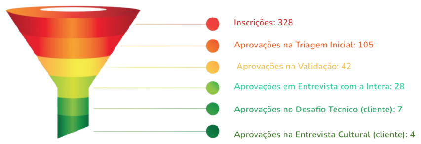
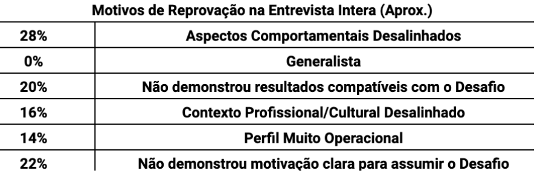
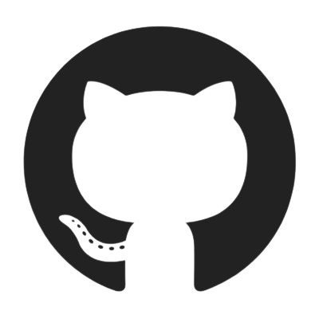

A EBANXé uma empresa que oferece soluções de pagamentos
internacionais, transferindo a moeda de pagamento para a exigida no país, dessa forma,
facilitando o acesso de compradores latino-americanos ao mercado internacional,
atualmente eles contrataram a Intera para a procura de 6 novos programadores
backend seniors. Que tenham as tecnologias exigidas, como, java, clound, spring e hibernate,
possuindo tambem um forte viés de liderança.
Problematica
A maioria dos desenvolvedores seniors já estão empregados em alguma empresa,
e a razão para que eles saiam de empregos atuais é a entrega de uma proposta melhor
ou acreditarem nos princípios e objetivos da empresa.
Assim necessitando de uma pesquisa mais direcionada.
Os dados fornecidos, percebe-se que apenas 1,21% dos candidatos inscritos
foram aprovados durante os testes, assim, apenas 4 de 328 candidatos foram aprovados
no processo completo. Tendo uma taxa de assertividade mediana, já que, 28%
dos candidatos escolhidos pela intera passaram pelo desafio técnico da EBANX


Na entrevistas com a equipe intera, mostraram uma taxa de reprovação
maior no quesito comportamento, ou seja,
o candidato não estaria alinhado
com o comportamento padrão da empresa,
apresentando uma taxa de reprovação de 28%,
mostrando que um ponto importante, é o alinhamento comportamental do candidato.
.png)
Levando em consideração que 45,12% das inscrições para vaga vieram do anúncio pelo LinkedIn,
e que grande parte dos desenvolvedores nesse nível de senioridade, possuem perfil na plataforma,
dessa forma, mostrando a efetividade e alcance de anúncios feitos por esse canal.
Palavras Chaves
- Java
- Clound
- Hibernate
- Spring
Handpick
O Handpick foi o canal de inscrições mais efetivo, possuindo 8,1% das aprovações finais,
tendo aprovado 3 de 4 candidatos, assim, sendo responsável por 75% das aprovações para EBANX.
Análises minuciosas costumam ser mais efetivas que filtragens em massa, dessa forma, o Handpick
se mostra a melhor opção para situação atual do contrato.

Git é uma plataforma de compartilhamento de projetos entre desenvolvedores,
como projetos opensource, que possuem vários desenvolvedores colocando um pouco deles em seu código fonte.
Atualmente o git é utilizado como portifólio para muitos desenvolvedores, desde projetos do início da carreira,
até projetos mais elaborados, ou seja, os projetos mais recentes mostram as tecnologias mais usadas pelo desenvolvedor.
A própria plataforma exibe quais linguagens foram aplicadas no projeto, contendo logo abaixo um “readme”
onde o desenvolvedor da uma breve descrição como o projeto funciona e quais tecnologias utilizadas.
Farei o novamente o anúncio da vaga no LinkedIn, tendo em vista, o
alcance que a plataforma fornece,assim, facilitando a pesquisa por
interessados ao cargo, nessa fase irá acontecer um pequeno filtro dos
candidatos em relação aos pontos principais da vaga. Posteriormente o
fluxo de procura de candidatos seguira com o Handpick, tendo uma
análise mais precisa dos candidatos resultado em uma maior
assertividade. A análise dos projetos no git dos candidatos, serviria
como uma extensão do Handpick, já que, nessa plataforma os
desenvolvedores usam como portifólio profissional e pessoal. Os projetos
mais recentes mostram as competências atuais do
desenvolvedor, dessa forma, filtrando quem realmente sabe ou só insinua que sabe.